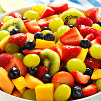
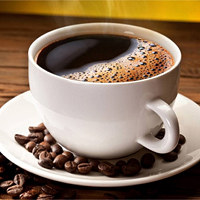
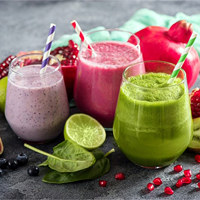
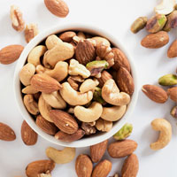

Эффективные советы для похудения
Почему не получается похудеть? 7 ошибок в практике врача

Если в попытке избавиться от лишнего веса человек придерживается диет, но желаемой цели
добиться не удается, значит он что-то делает неправильно. Рассмотрим 7 самых
распространенных ошибок, которые препятствуют похудению:
10 самых мощных продуктов для похудения

Знаете ли вы, что кофеин ускоряет обменные процессы на 3-11%, а жиросжигание – на 29%? А
имбирь ускоряет метаболизм на 10% даже без физических нагрузок, позволяя снижать вес и жир
на животе без причины? + ещё 8 удивительных продукта.
Коктейли для похудения: 31 рецепт вкуснейших коктейля, плюсы и минусы

Коктейли являются необходимым компонентом сбалансированного питания, направленного на
снижение веса. С их помощью удаётся быстро сбросить лишний вес и приобрести желаемые формы.
Диеты для похудения рекомендуют увеличить количество жидкости, но это не значит, что нужно
переходить исключительно на воду.
5 фактов, как орехи помогают похудеть

Зная калорийность орехов, люди часто отказываются от их употребления в пищу, считая, что
из-за них они наберут лишний вес. Однако исследования ученых со всего мира доказывают
противоположное.
12 вещей, которые заставляют набирать жир на животе
Отложения жира в зоне живота весьма опасны для здоровья. Лишний вес может спровоцировать
развитие тяжелых заболеваний: метаболического синдрома, сахарный диабет II типа, патологии
сердца, злокачественные опухоли. Существует 12 вещей, которые заставляют вас набирать вес.